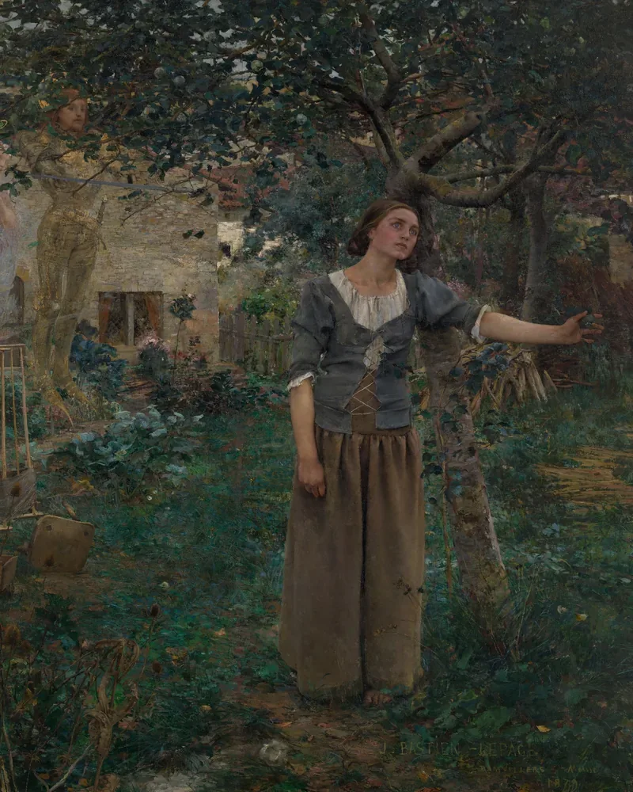

Path X · Specialisation
Safety and alignment
Learn the risks that come with more capable AI, then do hands-on alignment and interpretability work.

Jules Bastien-Lepage, Joan of Arc, 1879. The Met · CC0
The route
Island by island
8 islands, in the order to sail them.
AI literacy
What AI, machine learning and large language models are, what they can and can't do yet, and the words you'll see everywhere: model, training, parameters, tokens, prompts.
15–30 h Step 02 · Island 02Python
Variables, loops, functions, files and packages, then NumPy and pandas basics in a Jupyter or Google Colab notebook. Enough to read someone else's code and change it.
40–80 h Step 03 · Island 03Terminal, Git and GitHub
The terminal (moving around folders and running programs), Git for saving versions of your work, and GitHub for backing it up and sharing it. Most courses after this island hand out their material as GitHub repositories.
10–20 h Step 04 · Island 04Math for machine learning
Vectors and matrices, derivatives and gradients, probability and statistics. Every model you'll train rests on these three.
60–100 h Step 05 · Island 05Machine learning basics
Supervised and unsupervised learning, train, validation and test splits, overfitting, and the classic models (linear and logistic regression, decision trees, gradient boosting) in scikit-learn.
70–110 h Step 06 · Island 06Deep learning
Neural networks, backpropagation, convolutional nets and transformers at a working level, all in PyTorch, and what actually happens on a GPU during training.
60–100 h Step 07 · Island 30AI safety foundations
What could go wrong as AI systems get more capable, the main technical and policy responses, and who is working on them.
30–45 h Step 08 · Island 31Alignment and interpretability
Hands-on safety research: interpretability, evals and red-teaming, RLHF, scalable oversight and AI control.
60–150 hWhat you'll be able to build
Overview
Evals and red-team tests that find what a model gets wrong, interpretability experiments that look inside models, and clear analysis of AI risks and policy.
Good fit if you care about making AI go well and like research, writing and careful testing.
Why take it
- Mission-driven work on open problems in the field.
- Public funding is growing, led by government AI safety institutes.
- The first safety island needs no code, so you can start any time.
What it costs you
- A small field with few openings.
- Research-heavy and competitive.
- Many roles sit in a few countries and labs.
Effort
What it will take
Math 3/5
None for the first island; ML math for the second.
Code 3/5
Python and PyTorch for hands-on work.
GPU 2/5
Small models are enough to start.
Money 1/5
BlueDot and ARENA materials are free.
Careers
Where it leads
The UK AI Security Institute has more than 100 technical staff and about £66m a year in funding.
UK AI Security Institute ↗AI ethics, governance and regulation appear in 0.05% of US job postings in 2025.
Stanford AI Index 2026 ↗